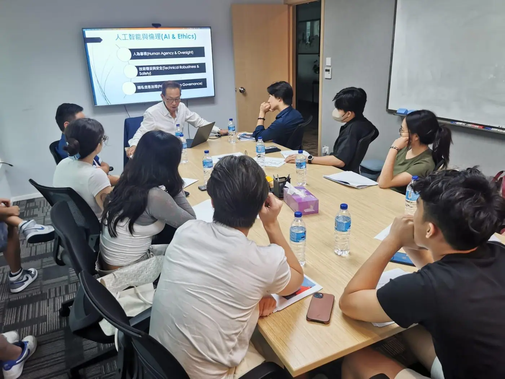

Written by Preston Chan
Written by Preston ChanBreaking Barriers in Law: Lessons from Stephen Kai-yi Wong’s Legal Journey
We recently had the incredible opportunity to host a seminar led by Stephen Kai-yi Wong, a distinguished legal mind whose career spans public service, international law, and private practice. His insights not only shed light on the evolving landscape of law but also inspired attendees with a powerful message of adaptability, collaboration, and purpose.
From his early days as Crown Counsel at the Hong Kong Attorney General’s Chambers to his impactful role with the United Nations Human Rights Committee, Mr. Wong’s path has been marked by a deep commitment to legal reform and public service. He later served as Privacy Commissioner for Personal Data of Hong Kong, championing the ethical use of personal data at a time when privacy is more critical than ever.

During the seminar, Mr. Wong shared reflections on his decades of experience in the legal field, emphasizing that “in law, it’s not just about knowing the rules—it’s about adapting, evolving, and working as a team to make a real impact.” His words resonated deeply with young professionals, law students, and aspiring changemakers in the room.
One of the most striking themes from his talk was the importance of continuous learning and mental agility. In an era where the legal and technological landscapes are shifting rapidly, Mr. Wong urged participants to remain curious, open-minded, and proactive in their growth. Whether navigating privacy law in the digital age or mentoring the next generation of legal talent, his approach is rooted in a strong foundation, shaped by flexibility, and powered by collaboration.
Today, Mr. Wong continues to serve both in private legal practice and as a law professor, where he dedicates his time to educating and empowering future legal professionals. His journey is a testament to the idea that success in law is not just about personal achievement—it’s about creating a community of peers who uplift and challenge each other to do better.
We are truly grateful for the insights Mr. Wong shared and the example he sets as a leader, mentor, and legal innovator.